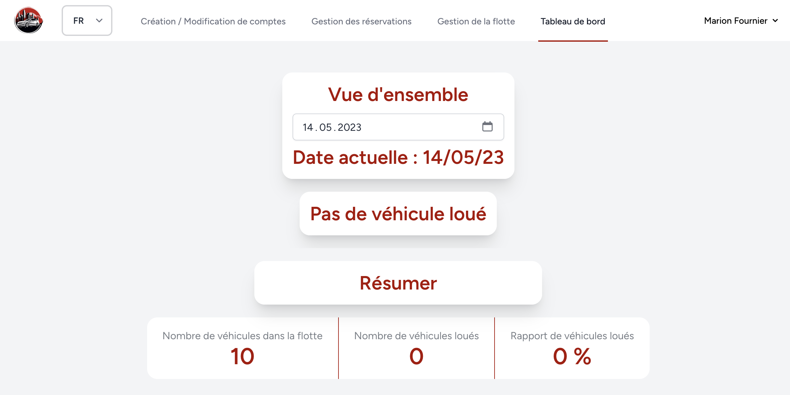
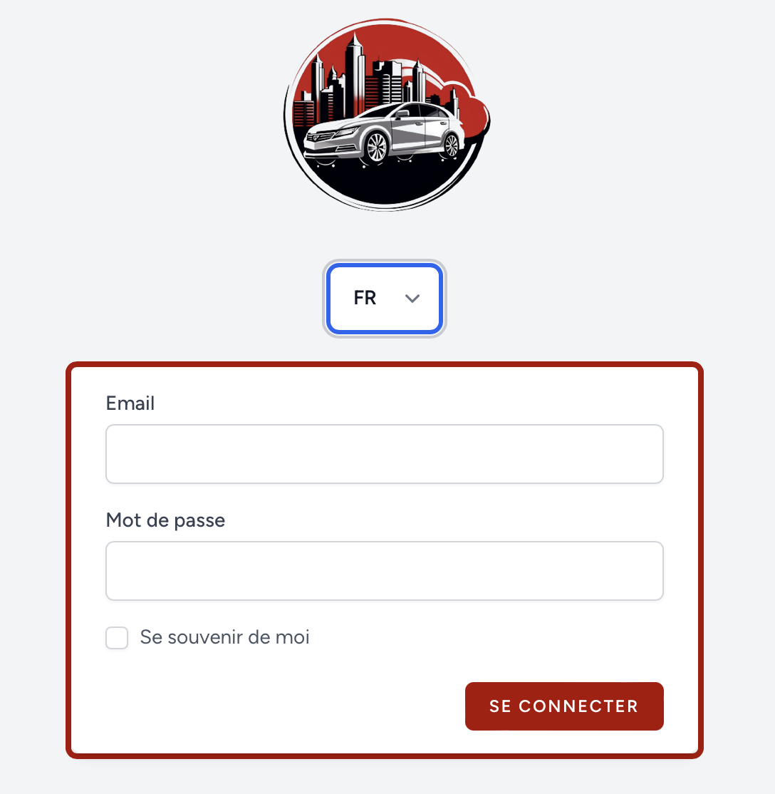

Administrator
Manage user accounts and personal information, with access to operational views.
Swiss CFC · Final certification project · May 2023
A complete Laravel web application built from specification to delivery: users, fleet, reservations, operational dashboard, multilingual UI and functional tests.

The project
The platform adapts to the responsibilities of administrators, managers and clients while sharing the same rental workflow and data model.
Manage user accounts and personal information, with access to operational views.
Operate the fleet, manage reservations, monitor status and follow daily activity from the dashboard.
Browse vehicles, choose a rental period and create reservations through a dedicated journey.
Interactive showcase
This static showcase uses the original screenshots from the TPI. No backend is simulated and no production application is exposed.
A dedicated login screen starts the authenticated experience and routes each user toward the features available to their role.

Engineering
Laravel structures the application around controllers, models, Blade views, Eloquent relationships and middleware-based authorization.
Authentication, domain logic, database migrations, Eloquent models and server-side validation.
Responsive screens enriched with Alpine.js, jQuery and AJAX interactions for selected workflows.
Functional tests cover authentication, routes, account management, fleet, reservations and dashboard behavior.
Project journey
The repository preserves the work around the application itself: planning, database design, mockups, implementation, tests, technical documentation and user documentation.
Define requirements, actors, deliverables and a concrete implementation schedule.
Model the data, application structure and interface before implementation.
Build the Laravel application, workflows, role logic and responsive screens.
Create functional tests for the core routes and business flows.
Deliver source code, work journal, user manual, technical manual and project evidence.
Go deeper
This showcase is only the front door. The original code, work journal, database model, mockups and project documents remain in the repository.